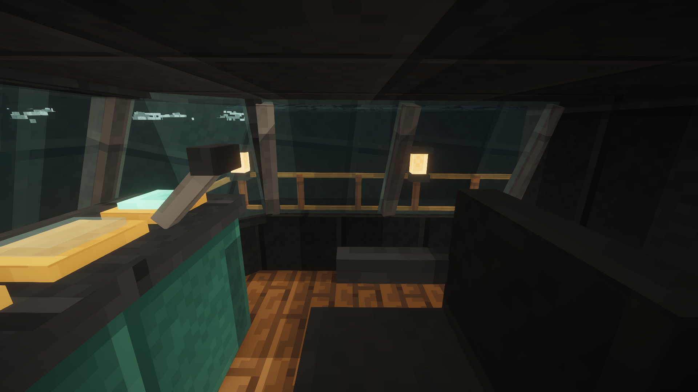
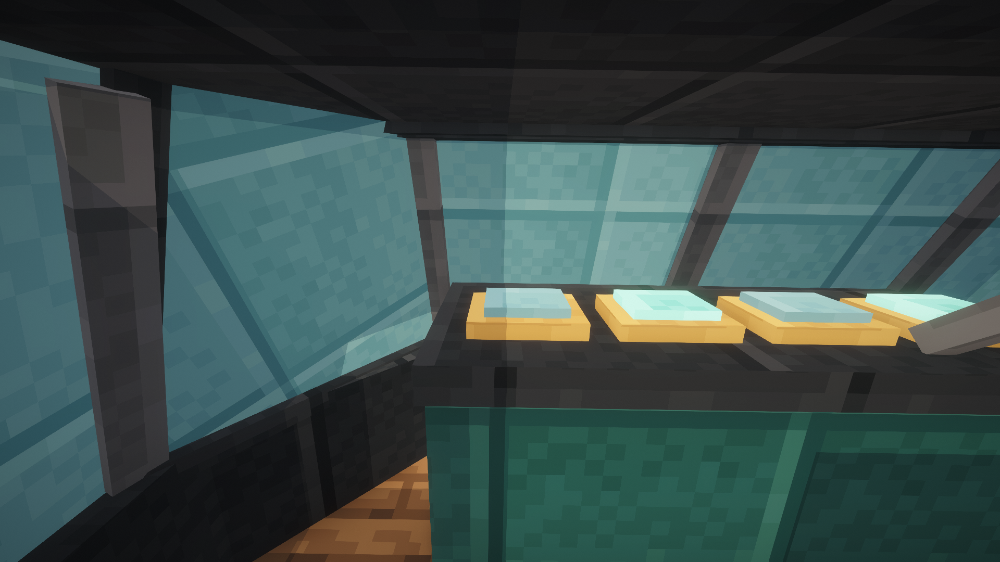
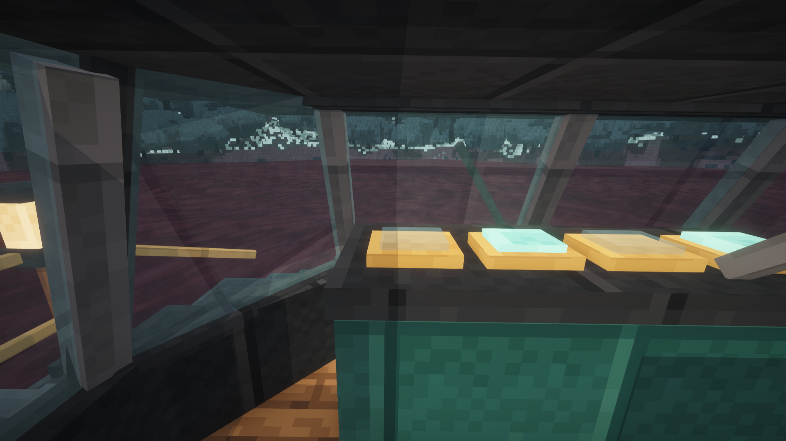

Скат SK04 · Эйтан E01-R7
Живые игровые кадры полной сборки с Distant Horizons.
9 десантных местPIN · 6 цифр26 ящиков Ската20 TPS · две машины в движении

Complementary · свет включён · без ночного зрения и интерфейса.Прозрачное стекло с Complementary

Непрозрачный контроль в той же точке.
Исправленный спрайт стекла: видно ближнее море.Корпус и трюм
Серверный замер
Одновременно двигались Эйтан и Скат с имитацией экипажа: 94,34 м и 195,79 м. 600 тиков: среднее 5,98 мс, p95 7,34 мс, p99 10,53 мс. Это отдельный замер техники, не нагрузка десяти живых игроков.
Описание функций, проверок и ограничений